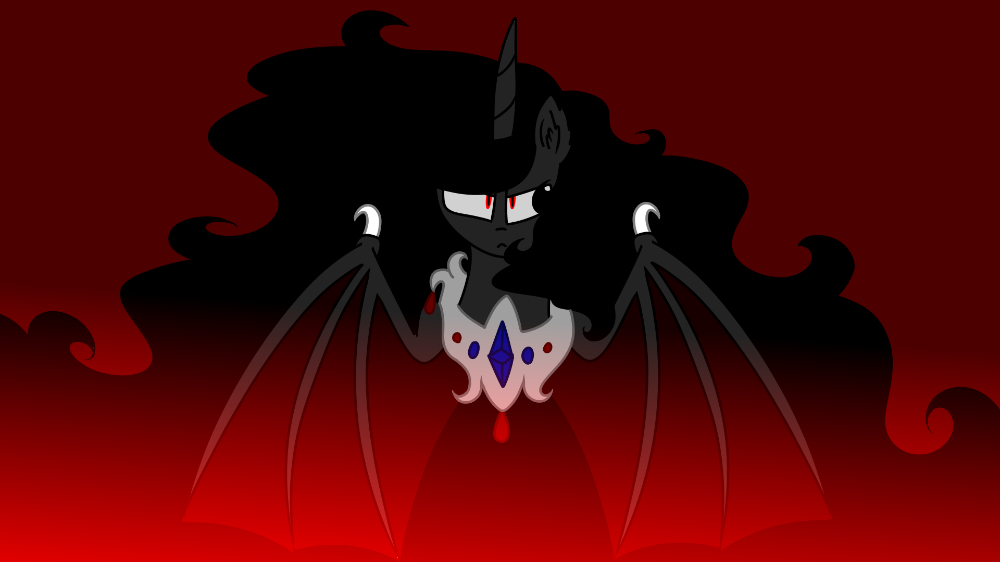

History of Lucifer Nomed
King Lucifer Nomed
Born: Fourth Moon, 1683 B.C.
Sacrificed: Tenth Moon, Year 139 A.C.

Lucifer Nomed was born in 1683 B.C. (Before Celestia) and was granted many things a young prince would desire. Second born, his elder brother, Prince Universum Nomed was granted the throne upon the night sky and galaxy beyond, from his father, King Pulchriores Galaxium, where Lucifer would be giften the powers of Light and life from his mother, Queen
Caelesti Lumine. After the ReMortal of their parents, it was up for the two brothers to control Prequestria and bring balance into their world. Universum did exactly what his destiny fortold him. He brough the night, created stars and planets. He brought a beautiful array of galaxies and gave ponies a reason to rest. Lucifer created light from the energy of magic and strengthened our Sun, for it was to die too soon. He created life from nothing, abandoned wastelands, deserted planets his brother created. What he did was exactly what his family requested. He stood by his brother's side... He would do anything in his power to prove his worth to Universum. He loved his brother. He loved his family. He loved his legacy. But he didn't like his limits. Creating life? Creating light? It was not enough. It was never enough. What could have gone so wrong? What thoughts could have come across his mind to create such twisted fantasies. To create a twisted world...?